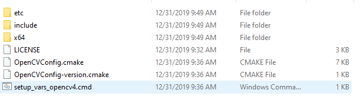

In theory, configuring a popular library like OpenCV in CMake should be easy. In practice, sadly, it is anything BUT easy. Why? Let me show you…
Note that I am not very knowledgeable in CMake, so it is possible I am doing something stupid. If so, it is even worse - as far as I understand the intent behind CMake, it should make developers lives easier, not harder.
This post is documentation of a frustrating journey of performing what should have been a trivial task - make dependency compile as part of a project. If you’d like to skip and take a look at working code, you can take a look at this repository.
Attempt 1
According to online tutorials and CMake documentation, a good way (best practice?) to download OpenCV and configure it as a part of the project is to use FetchContent. Alright, I thought to myself and wrote the following:
And then, generation of CMake build scripts… fails. With lots of errors that look like this:
1 2 3 4 5 6
CMake Error in out/build/x64-Debug/_deps/opencv-src/modules/core/CMakeLists.txt: Target "opencv_core" INTERFACE_INCLUDE_DIRECTORIES property contains path:
"E:/projects/OpenCV.CMake/out/build/x64-Debug"
which is prefixed in the build directory.
Attempt 1.5
I thought to myself, I must’ve done something wrong. First thing that I did, I added set(FETCHCONTENT_QUIET off) before calling Fetch_Content() - in theory, that would allow to see the exact steps it took to download and configure OpenCV. Well, I did see the steps.
1 2 3 4 5 6 7 8 9 10 11 12 13 14 15
1> [CMake] -- Populating opencv 1> [CMake] -- Configuring done 1> [CMake] -- Generating done 1> [CMake] -- Build files have been written to: E:/projects/OpenCV.CMake/out/build/x64-Debug/external/opencv-subbuild 1> [CMake] [0/6] Performing update step for 'opencv-populate' 1> [CMake] From https://github.com/opencv/opencv 1> [CMake] d76f245..7b12cbd master -> origin/master 1> [CMake] 9572895..7b28d5b 3.4 -> origin/3.4 1> [CMake] First, rewinding head to replay your work on top of it... 1> [CMake] Fast-forwarded master to origin/master. 1> [CMake] [2/6] No configure step for 'opencv-populate' 1> [CMake] [3/6] No build step for 'opencv-populate' 1> [CMake] [4/6] No install step for 'opencv-populate' 1> [CMake] [5/6] No test step for 'opencv-populate' 1> [CMake] [6/6] Completed 'opencv-populate'
That is nice, but it didn’t solve the issue, the problem apparently was in configure stage of CMake because I saw the same errors as above. Reading on the internet and trying various stuff didn’t help much. For example, one solution offered by forums was to set target properties of the target like this:
This looked like it should work, but after running FetchContent_MakeAvailable() on opencv, it apparently wasn’t recognized as target (which seemed like it should have recognized).
Some investigation time!
I decided to dig depeer. According to CMake sources (found here), I am seeing the following implenentation of FetchContent_MakeAvailable:
foreach(contentName IN ITEMS ${ARGV}) string(TOLOWER ${contentName} contentNameLower) FetchContent_GetProperties(${contentName}) if(NOT${contentNameLower}_POPULATED) FetchContent_Populate(${contentName})
# Only try to call add_subdirectory() if the populated content # can be treated that way. Protecting the call with the check # allows this function to be used for projects that just want # to ensure the content exists, such as to provide content at # a known location. if(EXISTS${${contentNameLower}_SOURCE_DIR}/CMakeLists.txt) add_subdirectory(${${contentNameLower}_SOURCE_DIR} ${${contentNameLower}_BINARY_DIR}) endif() endif() endforeach()
endmacro()
Since it uses FetchContent_Populate() to do its job, I looked at its implementation as well. There I saw something interesting.
# >> skipping some code for clarity's sake # Create and build a separate CMake project to carry out the population. configure_file("${CMAKE_CURRENT_FUNCTION_LIST_DIR}/FetchContent/CMakeLists.cmake.in" "${ARG_SUBBUILD_DIR}/CMakeLists.txt") execute_process( COMMAND${CMAKE_COMMAND}${generatorOpts} . RESULT_VARIABLE result ${outputOptions} WORKING_DIRECTORY "${ARG_SUBBUILD_DIR}" ) if(result) if(capturedOutput) message("${capturedOutput}") endif() message(FATAL_ERROR "CMake step for ${contentName} failed: ${result}") endif() execute_process( COMMAND${CMAKE_COMMAND} --build . RESULT_VARIABLE result ${outputOptions} WORKING_DIRECTORY "${ARG_SUBBUILD_DIR}" ) if(result) if(capturedOutput) message("${capturedOutput}") endif() message(FATAL_ERROR "Build step for ${contentName} failed: ${result}") endif()
endfunction()
Apparently, it dynamically creates another CMakeLists.txt and builds it as a child process of current CMake. And the template for the generated CMakeLists.txt looks like this:
# Distributed under the OSI-approved BSD 3-Clause License. See accompanying # file Copyright.txt or https://cmake.org/licensing for details.
cmake_minimum_required(VERSION ${CMAKE_VERSION})
# We name the project and the target for the ExternalProject_Add() call # to something that will highlight to the user what we are working on if # something goes wrong and an error message is produced.
This means that FetchContent_Populate() simply executes ExternalProject_Add but with CONFIGURE_COMMAND, BUILD_COMMAND and INSTALL_COMMAND disabled (yes, I know this is in CMake documentation, but I find it easier to read code than documentation - it is less boring this way!) After looking at OpenCV CMake scripts, it seemed that those stages should be executed before adding OpenCV as subdirectory - its CMake seems to pull dependencies during build time, not configure time.
Attempt 2
As a conclusion, I needed a way to run configure, build and install commands of ExternalProject_Add() at main CMake configuration step. This Stackoverflow answer seemed promising. I changed it a little to use GIT_REPOSITORY instead of URL command, so what I used looked like this:
# This function is used to force a build on a dependant project at cmake configuration phase. function (build_external_project target prefix url branch) #FOLLOWING ARGUMENTS are the CMAKE_ARGS of ExternalProject_Add
After some time, to my mild suprise, it succeeded!
1 2 3 4 5 6 7 8 9
1> [CMake] -- Configuring done 1> [CMake] -- Generating done 1> [CMake] -- Build files have been written to: E:/projects/OpenCV.CMake/out/build/x64-Debug 1> [CMake] 1> Extracted includes paths. 1> Extracted CMake variables. 1> Extracted source files and headers. 1> Extracted code model. 1> CMake generation finished.
The next step was to configure the subdirectory that will actually use OpenCV for compilation and linking. In the end, the subdirectory CMakeLists.txt looked like this:
Error 'external/opencv-build/lib/opencv_dnn420d.lib', needed by 'bin/OpenCVCMake.exe', missing and no known rule to make it
Then I looked again at CMake log and noticed this curious line:
1
1> [CMake] -- Building for: Visual Studio 162019
Then I noticed that in the build folder there is lots of vcxproj files were being generated. Then I modified the function to invoke current CMake generator, in this case it is Ninja - the default generator for Visual Studio CMake projects. I adjusted the configure step in build_external_project() to include the current CMake generator - notice the -G ${CMAKE_GENERATOR} addition.
1> [CMake] CMake Error: Error: generator : Ninja 1> [CMake] Does not match the generator used previously: Visual Studio 162019 1> [CMake] Either remove the CMakeCache.txt fileand CMakeFiles directory or choose a different binary directory.
After a bit of facepalm I deleted all possible temporary folders (which by now accumulted to 4GB!), and updated the root CMakeLists.txt, so the configure/build would take less time.
The resulting root CMakeLists.txt looked like this:
I re-generated CMake cache, and saw… another issue.
1 2 3 4 5 6 7 8 9 10 11 12 13 14 15
[CMake] CMake Warning at out/build/x64-Debug/opencv/OpenCVConfig.cmake:176 (message): 1> [CMake] Found OpenCV Windows Pack but it has no binaries compatible with your 1> [CMake] configuration. 1> [CMake] 1> [CMake] You should manually point CMake variable OpenCV_DIR to your build of OpenCV 1> [CMake] library. 1> [CMake] Call Stack (most recent call first): 1> [CMake] OpenCV.CMake/CMakeLists.txt:3 (find_package) 1> [CMake] CMake Error at OpenCV.CMake/CMakeLists.txt:3 (find_package): 1> [CMake] Found package configuration file: 1> [CMake] 1> [CMake] E:/projects/OpenCV.CMake/out/build/x64-Debug/opencv/OpenCVConfig.cmake 1> [CMake] 1> [CMake] but it set OpenCV_FOUND to FALSE so package "OpenCV" is considered to be 1> [CMake] NOT FOUND.
After I specified CMake install prefix, in the ‘opencv’ directory of output, the compiled and installed OpenCV appeared. I was getting closer. 
The last thing (is it?) I needed to do is to update the subdirectory CMakeLists.txt and change the find_package() to find_library(), so the resulting line looked like this:
1
find_library(OpenCV CONFIG REQUIRED)
Apparently, it was not the last thing. The project compiled successfully, but there was no include folders - after some fiddling, apparently the find_library() doesn’t set OpenCV_INCLUDE_DIRS and OpenCV_LIBS variables as it should.
After looking through OpenCVConfig.cmake I saw a very interesting part:
1 2 3 4 5 6 7 8
if(NOTDEFINED OpenCV_STATIC) # look for global setting if(NOTDEFINED BUILD_SHARED_LIBS OR BUILD_SHARED_LIBS) set(OpenCV_STATIC OFF) else() set(OpenCV_STATIC ON) endif() endif()
Since I wanted to link statically, I set BUILD_SHARED_LIBS before “finding” OpenCV package.